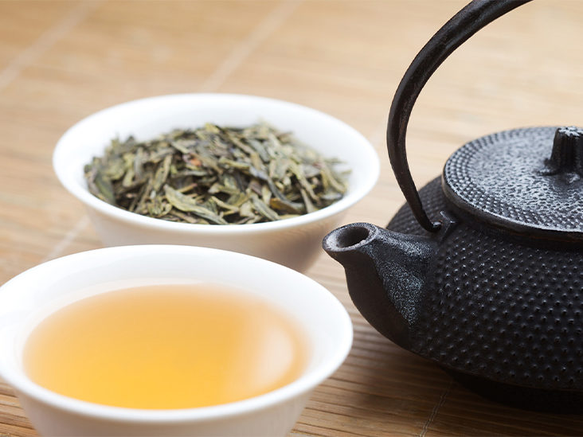
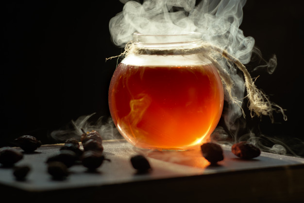

CEYLON TEA'S FIRST DARK MODE:ON PAGE

Black Tea
This Type of tea has the most sturdy flavor than most teas. Although most of them are made from the same leaf shrub.

white Tea
Just like the rest White tea is also made from Shrub. This is unique as it tastes moe sweet and gentle but not strong like most other teas.

Pu-er Tea
Pu-erh is unique fermented tea that origins Yunnan China. Pu-erh is known for its less bitterness.This tea when aged seize up caffeine molecules.
| Topics | Black Tea | White Tea | Pu-erh Tea | Oolong Tea |
|---|---|---|---|---|
| Health Benefits | Too much consumption can cause Coronary artery disease | High on Antioxidant than many fruits and vegitables | Reduces Cholesterol and help weight loss | Develops metabolism and decrease chances of getting diabetes |
| origin | China | Fujian province (China) | Yunnan province(China) | Fujian China |
| Processing Techniques | oxidized | umoxidized | ferment | oxidized |
| Caffeine | 50mg/cup | unknown | 25mg/cup | unknown |